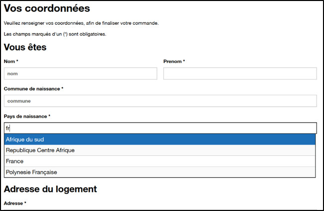
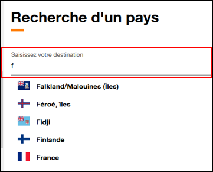
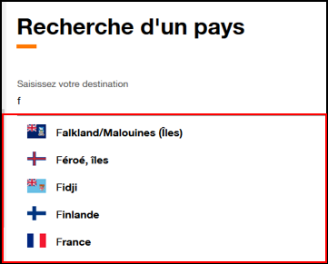

Recommandations pour l'accessibilité d'un composant d'autocomplétion
Thématiques associées :- Web
- Avancé
Date de parution
Les composants d’autocomplétion sont de plus en plus courants au sein de nos interfaces, pourtant ils restent souvent peu accessibles.
Nous avons donc décidés de réaliser un état des lieux afin de définir plusieurs recommandations fonctionnelles.
L’objectif final est de proposer un composant prêt à l’emploi pour nos projets.
Dans cet article nous vous présentons notre démarche et les recommandations retenues.
Notre démarche #
Nous souhaitons dans la mesure du possible nous appuyer sur des patterns existants.
Dans un premier temps, des audits en amont sont réalisés sur plusieurs composants par un expert accessibilité afin d’assurer une première sélection.
Les composants les plus utilisables sont ensuite soumis à des tests utilisateurs.
Au terme du benchmark les implémentations retenues sont :
Tests utilisateurs #
Nous avons sollicité des salariés d’Orange en situation de handicap.
- Documentaliste, utilisateur de JAWS et IE11
- Développeur, utilisateur de NVDA et Firefox ESR
- Téléconseiller, utilisateur de ZoomText et IE11
JAWS 19 (lecteur d’écran) et Zoomtext (loupe d’écran), sont les aides techniques fournies aux salariés non-voyants et malvoyants.
Internet Explorer 11 et Firefox ESR sont les navigateurs installés par défaut sur les postes de travail.
Les applications métiers et les intranets sont développés pour ces supports.
Les associations JAWS / IE et Zoomtext / IE sont les couples testés en priorité lors d’une évaluation de projets internes, car les plus répandus chez nos utilisateurs cibles.
Nous avons créé un scénario simple, basé sur des formulaires, utilisant chacun une version différente du composant :
- GOV UK site du gouvernement britannique accessible autocomplete
- Pattern WAI ARIA 1.1, Combobox with Listbox, exemple 1
- Pattern WAI ARIA 1.1, Combobox with Listbox, exemple 2
- Pattern WAI ARIA 1.1, Combobox with Listbox, exemple 3

Résumé des retours #
Depuis JAWS :
Dans les versions ARIA, exemples 2 et 3, l'utilisateur n'est pas informé qu’il s’agit d’un champ d’autocomplétion.
Depuis NVDA :
- L'utilisateur préfère la version GOV UK, car, non seulement, le composant lui indique le nombre de caractères minimum à saisir (2 ou 3 lettres), mais également, le nombre de résultats affichés.
- Depuis l'exemple 1 du pattern ARIA 1.1, c’est par hasard en faisant flèche bas qu’il découvre des propositions.
On peut complètement zapper l’autocomplétion
- Dans les exemples 2 et 3 du pattern ARIA 1.1, l'utilisateur perçoit la notion d’autocomplétion, mais on ne lui précise aucune information après la saisie de 2 ou 3 lettres (que ce soit le nombre de propositions, ou les propositions).
Depuis ZoomText :
L'utilisateur ne voit pas de différences significatives entre les quatre implementations.
Tests mobile #
En complément, des tests sur mobile sont réalisés par des experts accessibilités, à partir des mêmes pages de tests.
Versions testées :
- IOS 13 + Safari + VoiceOver
- Android 6.0.1+ Chrome + Talkback
Sur ces deux environnements la conclusion est la même :
GOV UK accessible autocomplete
- Comportement identique au desktop (toutes les vocalisations sont lancées, que ce soit à l’entrée dans le champ, et lors de la navigation dans la liste)
- Navigation dans la liste OK, et sélection de l’élément désiré OK
Pattern WAI ARIA 1.1 Combobox with Listbox
- La liste de propositions ne s’affiche pas systématiquement
- Lorsque la liste s’affiche, aucune vocalisation automatique n’est lancée
- L’utilisateur ne sait pas que des propositions lui sont faites
Conclusion des tests #
Il apparaît que sur les supports (aides techniques, navigateurs) testés, l’implémentation du GOV UK est plus robuste.
Le pattern ARIA repose sur une gestion du focus par aria-activedescendant, contrairement au composant de GOV UK qui repose sur la méthode focus().
Il est possible que ce soit cette implémentation qui impacte le comportement sur mobile.
C'est en tout cas une différence significative entre les deux composants.
Nous avons pris également l’initiative des tester la version WAI ARIA 1.2 de la combobox, encore en draft.
Là encore le comportement sur mobile n'est pas concluant, la liste de propositions n'est pas perçue.
Cependant, pour le reste le pattern utilisé se rapproche de l'implémentation GOV UK (par exemple le role = "combobox" est dorénavant positionné directement sur l’input, contrairement à la version ARIA 1.1).
A ce stade compte tenu des retours utilisateurs et des points de blocages sur mobile, nous orientons notre choix sur le composant GOV UK, par ailleurs conforté par l’évolution que semble prendre le pattern ARIA 1.2.
Recommandations #
Vous l’avez compris, nous nous sommes grandement appuyés sur le composant GOV UK.
Les écarts avec le composant initial sont commentés directement dans les recommandations.
Combobox #
Input text avec les attributs suivants :

role = "combobox"aria-expanded = true/falseautocomplete = "off"aria-autocomplete = "list"- La valeur
listcorrespond au comportement actuel du composant que nous devons produire, d’autres valeurs sont cependant possibles (inlineetboth) inline= suggestion automatique dans le champ de saisieboth= suggestion automatique dans le champ de saisie + liste de choix
- La valeur
aria-control(ID de la listbox)
Remarques
- Le role est directement positionné sur l’
input, contrairement à l’implémentation ARIA 1.1. et conformément à l’implémentation GOV UK et ARIA 1.2 (draft), - Par contre nous privilégions l’utilisation du
aria-controlauaria-owns, qui nous parait plus adaptée au regard de la description du pattern.
Plus d’informations dans l'article Differences between ARIA 1.0 and 1.1: Changes (new window)
Listbox #
Elément UL avec les attributs suivant :

role = "listbox"aria-label(la valeur est identique au label associé au champ de saisie)
Elément LI avec les attributs suivant :
role = "option"aria-posinset(position de l’item dans la liste)aria-setsize(longueur totale de liste de proposition)aria-selected = "true"(lorsqu’un item est en cours de sélection)tabindex = "-1"(la valeur -1 permettra une gestion du déplacement focus de manière programmatique)
Remarques
- Pour rappel, cette solution s’avère plus robuste que la gestion de l'élément actif par l’attribut
aria-descendant, plus d’informations :
a. Gestion du focus par tabindex (new window)
b. Gestion du focus par aria-activedescendant (new window) - La liste de propositions étant rafraichie dynamiquement nous préservons les attributs
aria-posinsetetaria-setsize, afin de fournir une liste à jour au lecteur d’écran, quelques soit le nombre de propositions.
Cela nous paraît plus robuste afin de palier à d'éventuels défauts d'interprétation des lecteurs d'écran.
En effet ceux-ci pourraient être induits en erreur dans des cas comme celui-ci, où le contenu d'une liste, et notamment le nombre d'items, est mis à jour dynamiquement.
Pour information, cette implémentation n’est pas préservée dans la draft ARIA 1.2.
Feedbacks #
- Un message pour indiquer les interactions, exemple issu de GOV UK :
Lorsque des résultats sont disponibles, utiliser les flèches haut et bas pour naviguer dans les propositions.
Depuis un périphérique tactile, explorer en utilisant un balayage
- Un message pour indiquer le nombre de caractères mininum à saisir
- Un message pour indiquer le nombre de résultats et l’item en cours de sélection :
3 résultats sont disponibles. Afghanistan 1 sur 3 est sélectionné
Remarques
Nous préservons les feedbacks mis en place par GOV UK. Ils se sont avérés pertinents pour diriger les utilisateurs dans l’utilisation du composant.
Intégration
Un élément DIV est présent dans le DOM dès le chargement de la page :
role = "status"aria-live = "polite"aria-atomic = "true"class = "visually-hidden"
Remarques
L’élément DIV avec l’attribut aria-live est présent dans le DOM dès le chargement de la page.
Nous nous assurons ainsi que les aides techniques identifient correctement cette zone dynamique lors de leur analyse du DOM.
A l’initialisation, le DIV est vide afin d’éviter une vocalisation intempestive.
Les messages sont intégrés dynamiquement selon les actions de l’utilisateur.
La restitution d’un message s’opère dès son intégration dans la zone LIVE.
Interactions #
-
Entrer dans les propositions : flèches bas (input vers premier item)
-
Navigation entre les propositions : flèches haut et bas (pas de tabulation)
-
Sortir des propositions : flèches haut (premier item vers input)
-
Sélectionner une proposition :
- Espace ou Entrée
- Repositionner automatiquement le focus dans l’
inputaprès sélection
-
Touche Echap :
- Ferme la
listboxet repositionne focus dans l'input - Aucun item n’est sélectionné
- Si une sélection est déjà faite, le focus est repositionné dans le champ sans le vider
- Ferme la
-
Fleche droite/gauche : repositionner curseur dans la combobox sans fermer la listbox
-
Touche TAB depuis la combobox : poursuivre le parcours focus, donc l’utilisateur est positionné sur l’élément suivant éligible au focus (
input,button,link, …) -
Touche TAB depuis la listbox :
- Poursuivre le parcours focus
- La combobox est renseignée avec la valeur en cours de sélection lors de l’activation de la touche TAB
-
Raccourci SHIFT + TAB depuis la listbox :
- Poursuivre le parcours focus en sens inverse
- La combobox est renseignée avec la valeur en cours de sélection lors de l’activation de la touche TAB
Remarques
- Lorsque la touche TAB est utilisée depuis la listbox, la valeur en cours de sélection est automatiquement ajoutée à la combobox, avant la sortie du composant.
Nous faisons ici le choix de nous aligner sur le comportement natif de l’autocomplétion.
Le composant GOV UK ne reprend pas ce comportement. - Les flèches permettent de se repositionner dans la combobox, là encore nous choisissons de nous aligner sur le comportement natif (contrairement cette fois-ci au pattern ARIA 1.2 draft)
Ressources #
- GOV UK, accessible autocomplete (new window)
- Article We’re building an autocomplete (new window)
- WAI-ARIA Authoring Practices 1.1 Combobox (new window)
- Select-a11y - demo (new window)
- Select your poison (new window)
- Select your poison part 2 (new window)
- Differences between ARIA 1.0 and 1.1: Changes (new window)